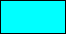
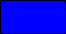
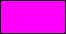
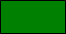
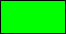
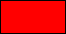
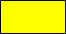

Colour And Blending
This section deals with the functions related to
colour, alpha and blending.
GameMaker: Studio has a comprehensive selection of
functions to manipulate the colour, alpha and blending of what is
drawn on the screen. Using these functions you can separate colours
into their component parts, create new colours, manipulate the draw
alpha and also play with blend modes to change how different things
in your game are drawn together. Apart from these functions, there
are also a number of constants that can be used as base colours in
these (and other) functions:
| Constant |
Colour |
Value |
| c_aqua |

|
16776960 |
| c_black |
|
0 |
| c_blue |

|
16711680 |
| c_dkgray |
|
4210752 |
| c_fuchsia |

|
16711935 |
| c_gray |
|
8421504 |
| c_green |

|
32768 |
| c_lime |

|
65280 |
| c_ltgray |
|
12632256 |
| c_maroon |
|
128 |
| c_navy |
|
8388608 |
| c_olive |
|
32896 |
| c_orange |
|
4235519 |
| c_purple |
|
8388736 |
| c_red |

|
255 |
| c_silver |

|
12632256 |
| c_teal |
|
8421376 |
| c_white |
|
16777215 |
| c_yellow |

|
65535 |
Getting colour and Alpha Values
The following functions can be used to get the component hues,
compound hue, saturation and luminosity of a selected colour as
well as the alpha and other properties:
- colour_get_blue
- colour_get_green
- colour_get_red
- colour_get_hue
- colour_get_saturation
- colour_get_value
- draw_getpixel
- draw_getpixel_ext
- draw_get_colour
- draw_get_alpha
Creating colours
These functions can be used to create colours from raw input
values for colour components:
- make_colour_hsv
- make_colour_rgb
- merge_colour
Note that you can also create colours from their hexadecimal
value using the "$" symbol beforehand, and these values can also be
used in the colour functions to get component hues or for mixing,
etc... The hexadecimal value for these colours is split into three
parts with the format Blue - Green - Red so, for example, to define
a purple colour you could use:
col = $983c95
Where 98 is the blue component, 3c is the green component and 95
is the red component.
Setting colour, Alpha and Blending
The following functions can be used to set the various different
options for drawing to the screen, including alpha, colour and
blending:
- draw_clear
- draw_clear_alpha
- draw_set_alpha
- draw_set_colour
- draw_set_colour_write_enable
- draw_set_blend_mode
- draw_set_blend_mode_ext
- draw_set_alpha_test
- draw_set_alpha_test_ref_value
- draw_get_alpha_test
- draw_get_alpha_test_ref_value
- draw_enable_alphablend
© Copyright YoYo Games Ltd. 2018 All Rights Reserved